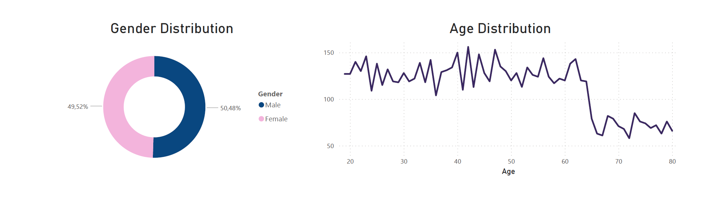

TELECOMPASS
AI Churn Analysis
General Overview
Here, get an instant snapshot of your telecom business's vital metrics. From overall customer count to churn rates and demographic insights, this dashboard provides a comprehensive view of your customer base and their behaviors.
Data Summary
Age: The average age of customers is 46.51 years, with a standard deviation of around 16.75. The age range varies from 19 years to 80 years.
Churn Rates: 73.46% of data labeled as 'not churn' and only 26.54% as 'churn'.
Total Customers: 7043
Gender Distribution: Female customers represent 49.52%, while the rest are male.
Churn Analysis
This dashboard provides a comprehensive insight into the reasons behind churn, customer satisfaction levels, and categorized churn details. Dive into churn reasons, satisfaction metrics, and understand the different churn categories affecting your telecom business. Gain valuable insights to enhance customer retention strategies and bolster your business resilience against churn.
Explore Service Usage
Explore the usage of different services among customers. Gain insights into the distribution and adoption of various services offered, impacting overall customer experience and engagement.
Services
Explore the usage of the following services:
- Phone Service
- Internet Service
- Multiple Lines
- Contract Type
- Payment Method
- Paperless Billing
Conclusions on Service Usage
For our conclusions, we segregated the services into Internet Service and Support Services:
- Internet Service:
- Customers who subscribe to Fiber for internet service have a significantly lower churn rate.
- Customers using Cable internet service tend to have higher churn rates.
- Customers without any internet service exhibit a notably low churn rate.
- Support Services:
- Customers not subscribing to support services like Online Security, Online Backup, Device Protection Plan, Premium Tech Support are more prone to churning.
The data visualizations reveal notable trends. Shorter contract durations are strongly associated with higher churn rates. Customers who opt for paperless billing are also more susceptible to churn. Additionally, those using bank withdrawals as their payment method exhibit an increased likelihood of churning.